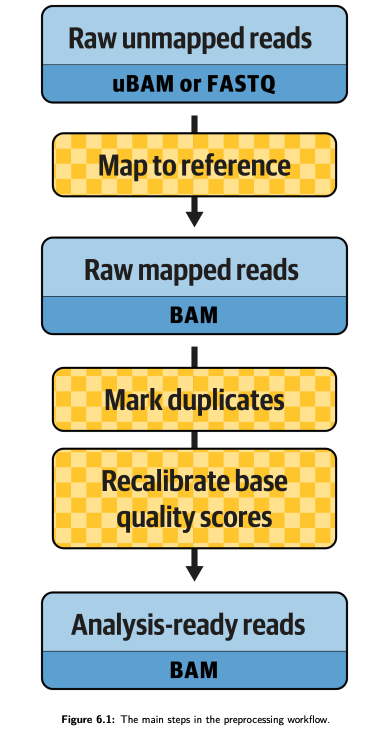

Data pre-processing for variant discovery GATK4#
An HPC workflow that pre-processes 50 matched tumor-normal whole genome sequencing (WGS) fastq files from 25 childhood acute lymphoblastic leukemia cases. WGS data were from Illumina NovaSeq 6000 Sequencing. Check out gatk doc for more details.
This workflow was written according to the following GATK official WDLs:
Detailed versions:
https://github.com/gatk-workflows/gatk4-genome-processing-pipeline/blob/master/tasks/UnmappedBamToAlignedBam.wdl
https://github.com/gatk-workflows/gatk4-genome-processing-pipeline/blob/master/WholeGenomeGermlineSingleSample.wdl
Simple version:
https://github.com/gatk-workflows/gatk4-data-processing/blob/master/processing-for-variant-discovery-gatk4.wdl
Detailed documents for this simple version: https://github.com/broadgsa/gatk/blob/master/doc_archive/methods/Reference_implementation:_PairedEndSingleSampleWf_pipeline.md#SortAndFixTags
Other tutorials:
The main steps in the preprocessing workflow. A figure from GITC.#
